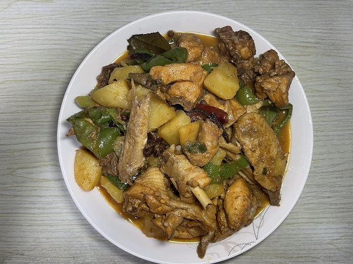
食材用料
| 食材 | 数量 |
|---|---|
| 鸡 | 一只 |
| 土豆 | 两个 |
| 青椒 | 两个 |
| 油 | 适量 |
| 白糖 | 适量 |
| 葱 | 适量 |
| 姜 | 适量 |
| 蒜 | 适量 |
| 辣椒 | 适量 |
| 花椒 | 适量 |
| 八角 | 适量 |
| 香叶 | 适量 |
| 桂皮 | 适量 |
| 盐 | 适量 |
| 生抽 | 适量 |
| 老抽 | 适量 |
| 辣椒油 | 适量 |
| 料酒 | 适量 |
做法步骤
| 图片 | 步骤 |
|---|---|
| 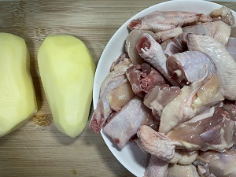 | 1. 准备食材 |
| 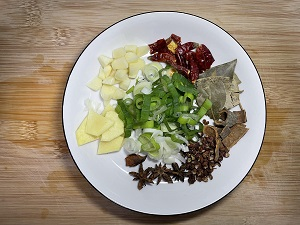 | 2. 准备调料：蒜、姜、蒜、辣椒、花椒、八角、香叶、桂皮 |
| 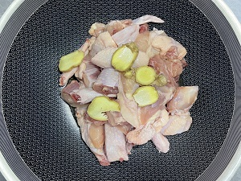 | 3. 鸡块焯水，放入姜片、料酒 |
| 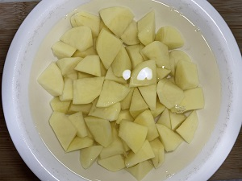 | 4. 土豆切滚刀块 |
| 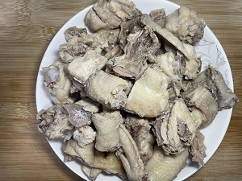 | 5. 鸡块去除浮沫后捞出 |
| 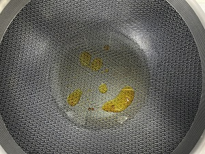 | 6. 放油大火，放入白糖或者冰糖炒化 |
| 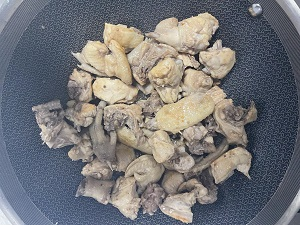 | 7. 放入鸡块翻炒，炒出香味 |
| 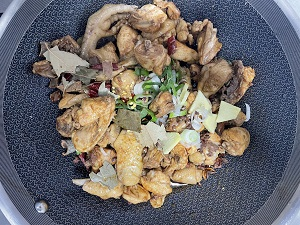 | 8. 放入调料翻炒 |
| 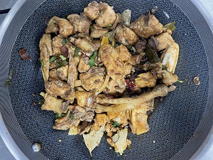 | 9. 放入盐、生抽、老抽、辣椒油、料酒翻炒均匀 |
| 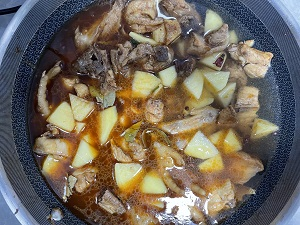 | 10. 放入土豆翻炒，然后加入水没过土豆，盖上锅盖 |
| 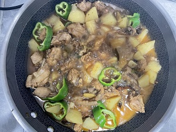 | 11. 煮到一半放入青椒，大火收汁 |
| 12. 装盘 |